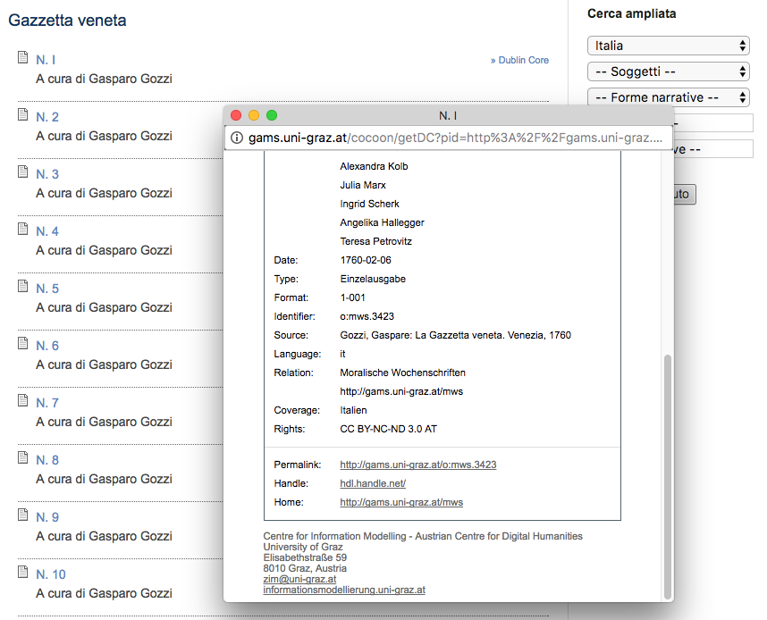
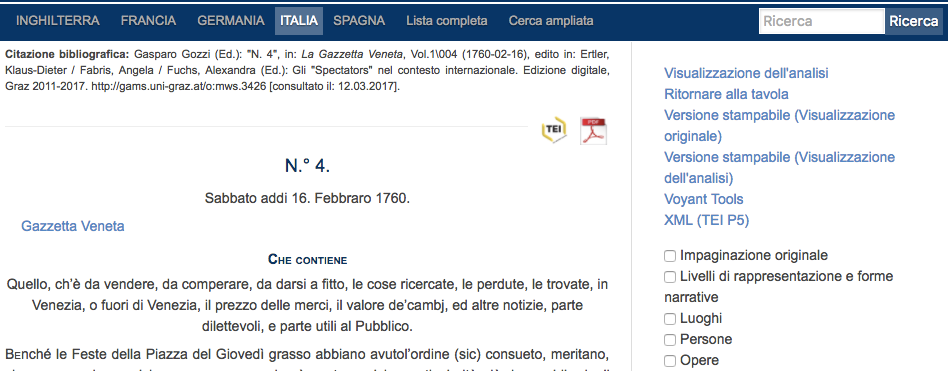
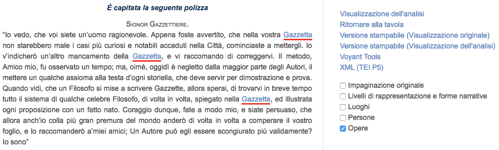
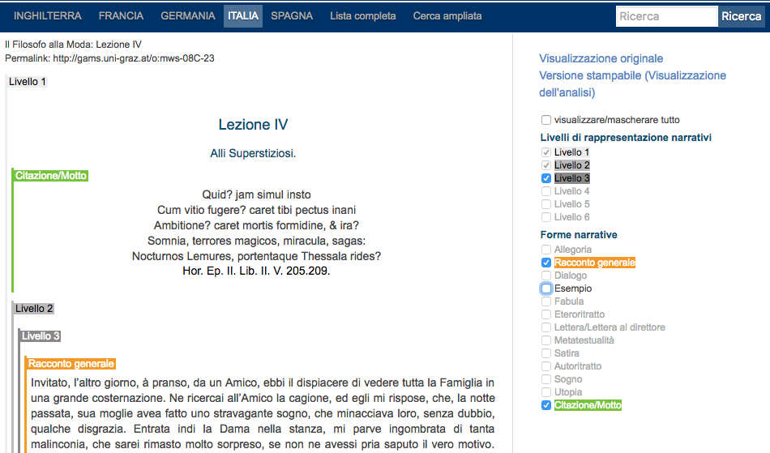
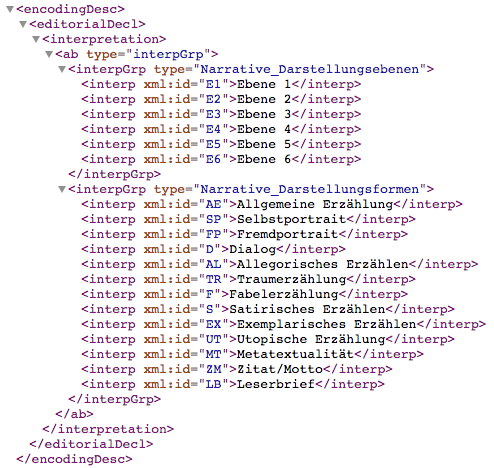
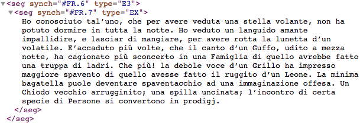
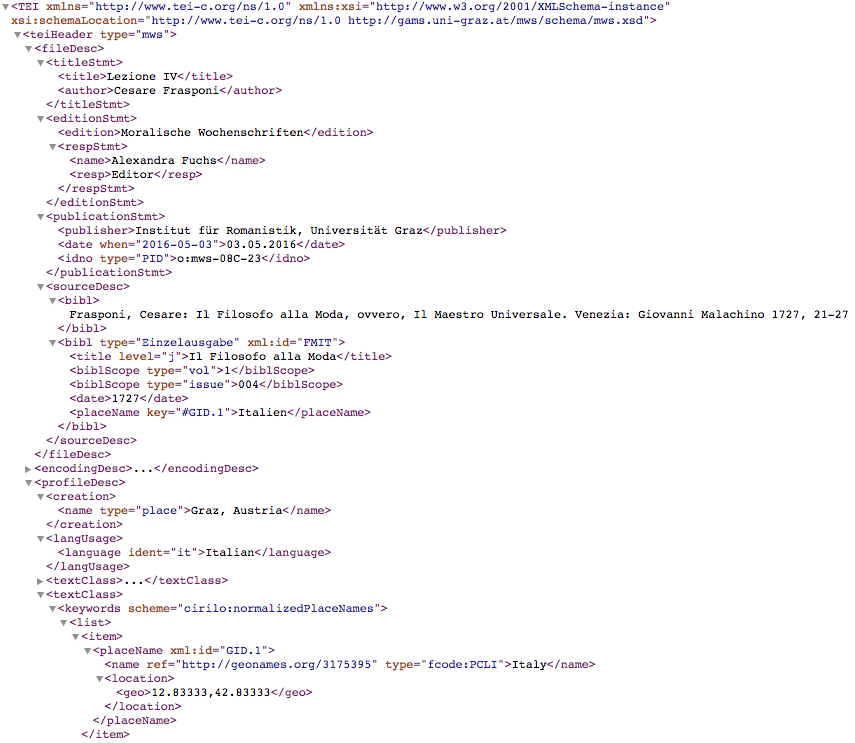
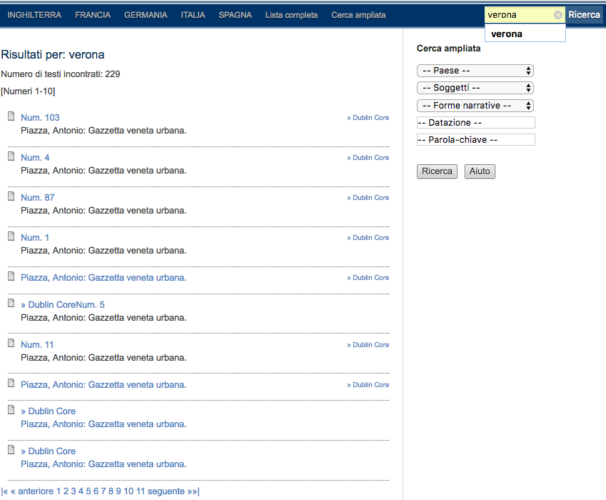

Spectateurs (Moralische Wochenschriften)
Table of Contents
Abstract
The Spectateurs (Moralische Wochenschriften) project is collecting eighteenth century periodical essays from the Enlightenment period from different European countries in an effort to build a comprehensive database of this literary genre. The unique selling proposition of the corpus is its multilingualism, in that users can explore the genre across borders and compare the national socio-cultural movements of the time. The project offers exciting interdisciplinary research opportunities but more should be done to facilitate the reuse of the collection, starting from better documentation and an efficient download system.
Introduzione
Il progetto Spectateurs (Moralische Wochenschriften), in italiano Spettatori, mette in rete una collezione digitale di settimanali moralistici europei in continua crescita risalenti al diciottesimo secolo. Il progetto, che può essere considerato un corpus di riferimento in materia, prende il nome dal quotidiano inglese 'The Spectator', apparso per la prima volta nel 1711 e imitato in tutt'Europa durante l'Illuminismo sia come quotidiano che come settimanale. Il carattere brillante ed educativo di questa tipologia di giornale sollecitò l'interesse di lettori e lettrici di diversa estrazione e classe sociale, nonostante fosse principalmente rivolto a un pubblico borghese (Ertler, 2012).
Spectateurs (Moralische Wochenschriften) – d'ora in poi MWS – si propone di raccogliere ed esporre tutti questi settimanali per uno studio approfondito della comunicazione di massa e del panorama socio-culturale illuminista, nonché dell'influenza esercitata da questo genere letterario-giornalistico sulla narrativa moderna. Il progetto, unico nel suo intento, è diretto da Klaus-Dieter Ertler dell'Istituto di Lingue Romanze dell'Università di Graz in collaborazione con il Zentrum für Informationsmodellierung austriaco. L'iniziativa più vicina è Europeana Newspapers.1 Il testo introduttivo del progetto è datato febbraio 2011 ma la durata ufficiale del progetto non è specificata. La pagina Imprint,2 obbligatoria per siti pubblicati in paesi germanofoni e solitamente utilizzata per dichiarazioni legali e recapiti, non fornisce informazioni circa le risorse economiche del progetto e neppure un recapito. L'unico indirizzo email visibile è nascosto nelle schede dei metadati Dublin Core allegate a ciascun giornale (Fig. 1).
Obiettivi e contenuto
 
Il progetto non risponde a domande di ricerca specifiche ma si presenta come "una banca dati centrale per tutti i giornali moralistici europei" aperta a coloro che nutrono un interesse per il periodo storico e il genere letterario. L'accesso alla risorsa è diretto: non richiede fastidiosi login o l'installazione di particolari programmi per l'utilizzo.
I giornali sono catalogati per paese d'origine e divisi nei loro rispettivi volumi o numeri. Ciascun volume presenta una scheda di metadati esauriente (Fig. 1) e alcune di queste informazioni sono opportunamente riunite e ripetute a capo pagina in forma di citazione bibliografica (Fig. 2).

MWS non fornisce traduzioni dei testi né una bibliografia sull’argomento o elenco di pubblicazioni derivanti dal progetto.
Metodi
Le scelte di grafica della risorsa non sono precisate ma la struttura organizzativa dei testi è intuitiva e semplice. Non è precisato quante e quali lingue andranno a costituire il database né quale sarà il numero totale dei giornali e quando essi diverrano elettronicamente fruibili. Attualmente (marzo 2017) il progetto mette a disposizione 11 giornali italiani, 22 spagnoli, 4 tedeschi, 15 francesi e 1 inglese per un totale di 53 giornali. Questo numero, tuttavia, non coincide con i 44 giornali riportati nella voce 'Lista Completa' del menù principale.
Il progetto non fornisce informazioni circa le fonti dei testi qui raccolti, per cui non è dato sapere se e come la digitalizzazione è stata effettuata o se i giornali provengano da edizioni digitali esistenti.4 Non avendo accesso alle scannerizzazioni dei giornali e mancando di documentazione circa i criteri di codifica XML (TEI P5), non è chiaro se le trascrizioni di MWS siano diplomatiche, semi-diplomatiche o interpretative. Da una rapida analisi dell’ortografia, si potrebbe ipotizzare una diplomatica.
Difficile quantificare il corpus con esattezza: un download del progetto dal server austriaco conta circa 4.5 GB di dati fra giornali (inclusi alcuni testi non attualmente disponibili in rete ma probabilmente prossimi alla pubblicazione), metadati e file annessi. Le numerosissime cartelle e sottocartelle non permettono di calcolare il numero totale di parole ma, date le dimensioni del download, si tratta sicuramente di centinaia di migliaia di tokens.
 <encodingDesc> nel
<teiHeader> del giornale Il Filosofo alla
Moda: Lezione IV contiene la lista, in tedesco, di possibili
annotazioni, ognuna contrassegnata da un xml:id.
<body> dello stesso
giornale le relative annotazioni vengono invocate tramite l'xml:id
dichiarato nel <teiHeader> (vedi Fig. 5). Qui viene riportato un Livello
3 (@type=E3) e un esempio
(@type=EX).
<teiHeader>
del file di trascrizione XML (TEI P5).
Dati forniti e riutilizzo
Tutti i testi di MWS, come anticipato in precedenza, sono individualmente scaricabili sia in formato PDF che XML (TEI P5). Una versione TXT, spesso preferita da coloro che svolgono analisi testuali automatiche, non è fornita ma reperibile in tre modi: rimuovendo tutti i marcatori dal formato XML; copiando, incollando e ripulendo il testo HTML così come presentato nel sito; oppure, se in possesso di abilità tecniche, scaricando l'intera risorsa e rimuovendo i dati non necessari in maniera automatica.7 Attualmente, infatti, il progetto manca di un metodo efficiente per il download completo del corpus, sia esso per mezzo di un API, di un'architettura REST o di un archivio .zip.8
Interfaccia

L'interfaccia permette di consultare i giornali singolarmente, non l'intero corpus. Si possono effettuare sia ricerche semplici mediante l'apposita barra di ricerca sia ricerche più avanzate cliccando su 'Cerca ampliata' nel menù principale. Come si può osservare dalla Fig. 8, una ricerca semplice del termine 'verona' riporta i testi che lo contengono. La schermata dei risultati diventa però ambigua quando l’utente vuole fare delle ricerche più raffinate. La ricerca ampliata a destra dei risultati, suggerisce la possibilità di aggiungere ulteriori filtri. Selezionando, però, ad esempio, 'Passione' dalla voce 'Soggetti', i risultati precedenti vengono annullati e sostituiti con quelli pertinenti a 'Passione'. Per ottenere risultati che contengano il termine 'verona' assieme a un ulteriore soggetto come 'Passione' bisogna, quindi, usare un operatore Boolean nella barra di ricerca semplice, ovvero 'verona AND passione'. Le modalità di ricerca sono descritte in una pagina separata, la pagina 'Aiuto' attualmente disponibile solo in inglese e tedesco e accessibile tramite il bottone posto sotto 'Cerca ampliata'. Per risolvere questa ambiguità e assistere gli utenti nella ricerca, tali istruzioni potrebbero essere rese più visibili nelle schermate di ricerca.
Per l'analisi dei testi, invece, l'utente può scegliere di manipolarli tramite l'integrazione con Voyant Tools o in via del tutto indipendente. Voyant Tools è uno strumento web di analisi testuale che offre visualizzazioni statistiche d'insieme per ogni testo (word-cloud, occorrenze di parole, dimensioni del testo, ecc.). L'utilità di tali visualizzazioni è soggettiva ma l'intento di questo strumento è di riproporre i testi in chiave statistica e relazionale. Per analisi più avanzate, è necessario scaricare i file di cui si ha bisogno in locale. Il progetto purtroppo non fornisce l'opzione di scaricare la totalità dei dati come file unico. Una soluzione è di recuperare i dati con il comando wget per mezzo dell'interfaccia a linea di comando. In questo modo però non vengono solo scaricati i file XML (TEI P5) ma una quantità ingente di file attinenti, quali metadati e le pagine di presentazione per ogni giornale nelle lingue proposte.10
L'unico elemento interattivo dell'interfaccia di questo progetto si basa sulla possibilità di (de)selezionare diversi livelli d'annotazione.
Preservazione
La documentazione attuale del progetto disponibile sul sito MWS è disomogenea e non sufficientemente dettagliata soprattutto per quanto riguarda le tempistiche e le scelte editoriali. Una panoramica tecnica è invece accessibile tramite il sito ufficiale del Zentrum für Informationsmodellierung, responsabile per lo sviluppo dell'infrastruttura GAMS (Geisteswissenschaftliches Asset Management System) che sostiene il progetto.11 GAMS si basa su FEDORA (Flexible Extensible Digital Object Repository Architecture) e segue perciò gli standard di preservazione da esso previsti, nonché quelli di OAIS (Open Archival Information System) e di Linked Open Data (LOD).12 La documentazione di GAMS dedica un'intera sezione all'esposizione del concetto di preservazione digitale a lungo termine e a come GAMS ne adempia i requisiti. Nel 2014, infatti, la certificazione Data Seal of Approval ha riconosciuto GAMS come "trusted digital repository" e, pertanto, come iniziativa impegnata a garantire il continuo accesso alle proprie risorse digitali.
Il progetto è protetto da una licenza Creative Commons
Attribution-NonCommercial-ShareAlike, la quale regola l'uso di tutti
i dati costituenti MWS. Per ogni giornale, GAMS fornisce un URL permanente
generato dal server del Zentrum für Informationsmodellierung13 nonché un identificatore
permanente (PID) nel <teiHeader> di ciascun documento.
Conclusione
In conclusione, MWS, sebbene ancora in fase di elaborazione, raggiunge lo scopo di rendere elettronicamente fruibili una collezione di giornali moralistici europei del diciottesimo secolo. Lo USP o "argomentazione esclusiva di vendita" del corpus è un progetto di respiro europeo, in quanto gli utenti possono studiare e paragonare lo sviluppo di questo genere letterario nelle diverse nazioni in un determinato periodo e contesto storico. Le opportunità di ricerca offerte dal progetto sono molte e di potenziale interesse per un pubblico vasto (linguisti, storici, critici letterari, ecc.).
C'è tuttavia spazio per migliorare: quanto più la qualità dei dati forniti è alta, tanto meno lo è quella della documentazione circa le scelte editoriali, la grandezza stimata del corpus e la tempistica di pubblicazione dei successivi numeri. Si suggerisce quindi una maggiore attenzione alla stesura di una documentazione dettagliata e di prevedere un archivio di tutti i dati per un download completo dell'attuale collezione.
Bibliography
- Ertler, Klaus-Dieter. 2012. "Moral Weeklies (Periodical Essays)", EGO - Europäische Geschichte Online, available at http://ieg-ego.eu/en/threads/models-and-stereotypes/anglophilia/klaus-dieter-ertler-moral-weeklies-periodical-essays.
Notes
- https://web.archive.org/web/20170827081704/http://www.europeana-newspapers.eu/. ↑
- Vedi: http://gams.uni-graz.at/archive/objects/context:mws/methods/sdef:Context/get?mode=imprint&locale=en (Consultato: 3 aprile 2017). ↑
- Vedi: https://voyant-tools.org/ (Consultato: 3 aprile 2017). ↑
-
La consultazione del
<teiHeader>delle versioni XML dei testi, dove queste informazioni vengono spesso riportate, non contiene dettagli a riguardo. ↑ - La Dublin Core® Metadata Initiative (DCMI) è un'iniziativa volta alla gestione e allo sviluppo di standard di archiviazione digitale. http://dublincore.org/ (Consultato: 3 aprile 2017). ↑
- Disponibile qui: http://gams.uni-graz.at/mws/schema/mws.xsd (Consultato: 3 aprile 2017) conforme all' ISOcat Data Category Registry. ↑
- Per esempio, tramite l'interfaccia a linea di comando con 'wget -r'. ↑
- Come quello – molto comodo – proposto dalla biblioteca digitale digilibLT. Vedi: http://digiliblt.lett.unipmn.it/g_bulk_opere.php (Consultato: 3 aprile 2017). ↑
- Per esempio, la pagina 'Aiuto'. ↑
- Si consiglia perciò a coloro che desiderino scaricare la risorsa in questo modo di fare ciò su un server o di liberare circa 5GB di spazio sul proprio computer. ↑
- Disponibile qui: https://web.archive.org/web/20170827082311/http://gams.uni-graz.at/docs (Consultato: 3 aprile 2017). ↑
- Come riportato nella documentazione tecnica di GAMS, una componente dell'infrastruttura del progetto, Cirilo, può essere utilizzata come OAI harvester e quindi essere collegata a risorse quali Europeana. Vedi: https://web.archive.org/web/20170827082311/http://gams.uni-graz.at/docs#cirilo (Consultato: 3 aprile 2017). ↑
- Ogni URL GAMS è prefissato dal codice 11471. Per esempio 'hdl.handle.net/11471/513.20.1803'. ↑
@article{spectateurs,
author = {Franzini, Greta},
title = {Spectateurs (Moralische Wochenschriften)},
journal = {RIDE – A review journal for digital editions and resources},
number = {6},
year = {2017},
doi = {10.18716/ride.a.6.6},
url = {https://doi.org/10.18716/ride.a.6.6},
}TY - JOUR
AU - Franzini, Greta
TI - Spectateurs (Moralische Wochenschriften)
T2 - RIDE – A review journal for digital editions and resources
IS - 6
PY - 2017
DA - 2017/09
DO - 10.18716/ride.a.6.6
UR - https://doi.org/10.18716/ride.a.6.6
PB - Institut für Dokumentologie und Editorik e.V.
LA - it
ER - Franzini, G. (2017). Spectateurs (Moralische Wochenschriften). RIDE – A review journal for digital editions and resources, (6). https://doi.org/10.18716/ride.a.6.6Franzini, Greta. "Spectateurs (Moralische Wochenschriften)." RIDE – A review journal for digital editions and resources, no. 6, 2017. https://doi.org/10.18716/ride.a.6.6.Franzini, Greta. "Spectateurs (Moralische Wochenschriften)." RIDE – A review journal for digital editions and resources, no. 6 (2017). https://doi.org/10.18716/ride.a.6.6.